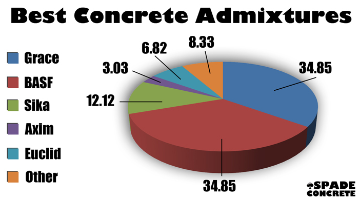

ADMIXTURES
Admixtures are ingredients other than water, aggregates, hydraulic cement, and fibers that are added to the concrete batch immediately before or during mixing. A proper use of admixtures offers certain beneficial effects to concrete, including improved quality, acceleration or retardation of setting time, enhanced frost and sulfate resistance, control of strength development, improved workability, and enhanced finishability. It is estimated that 80% of concrete produced in North America these days contains one or more types of admixtures. According to a survey by the National Ready Mix Concrete Association, 39% of all ready-mixed concrete producers use fly ash, and at least 70% of produced concrete contains a water-reducer admixture.
Admixtures vary widely in chemical composition, and many perform more than one function. Two basic types of admixtures are available: chemical and mineral. All admixtures to be used in concrete construction should meet specifications; tests should be made to evaluate how the admixture will affect the properties of the concrete to be made with the specified job materials, under the anticipated ambient conditions, and by the anticipated construction procedures.
Mineral admixtures (fly ash, silica fume [SF], and slags) are usually added to concrete in larger amounts to enhance the workability of fresh concrete; to improve resistance of concrete to thermal cracking, alkali-aggregate expansion, and sulfate attack; and to enable a reduction in cement content.
Chemical admixtures are added to concrete in very small amounts mainly for the entrainment of air, reduction of water or cement content, plasticization of fresh concrete mixtures, or control of setting time.
